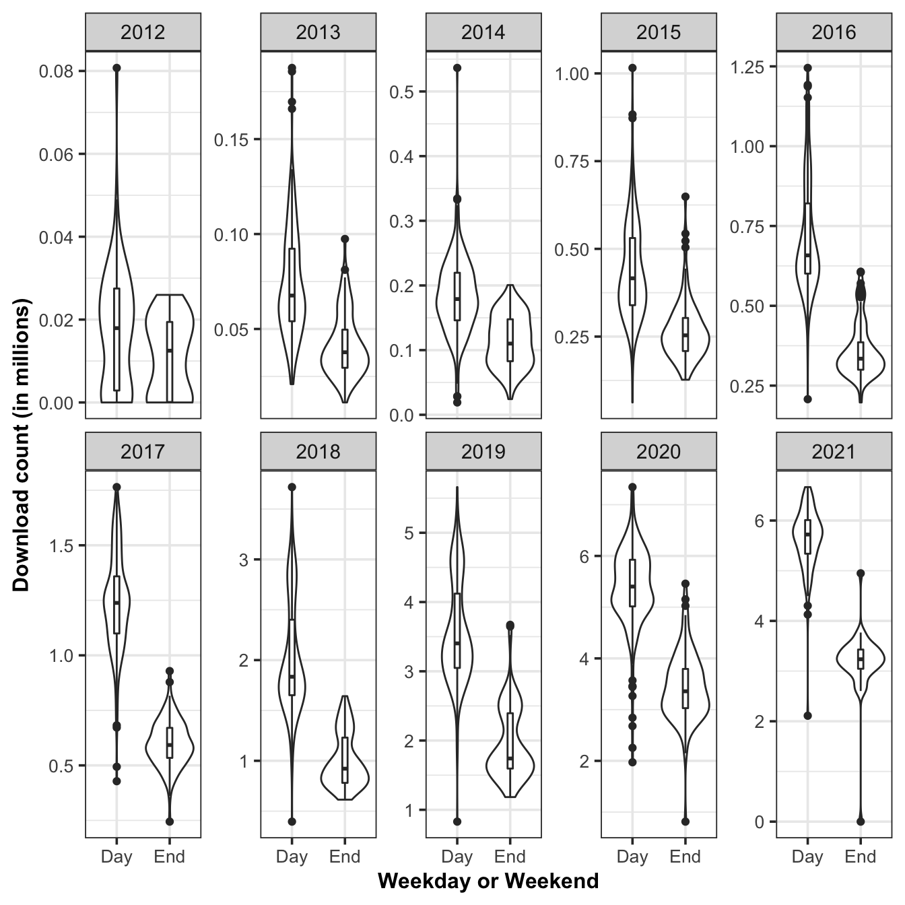

2.1 Daily download of R-packages
Finding 1: There was unusual download activity in one day of 2014 and 2018.
In this section, we study the daily downloads of CRAN packages from 2012-10-01 to 2021-05-04. The data is obtained from the cranlogs package, which includes a summary of the download logs from the RStudio CRAN mirror. The daily download data for CRAN packages are available from 1st October 2012. Examination of this data showed two unusual observations in 2014 and 2018 as shown in Figure 2.1.
Having a closer look into these two spikes, the one happening in 2014 is on 2014-11-17, which is Monday, while the other one happening in 2018 is on 2018-10-21, which is on Sunday. The 3.1.2 version of R for windows released on 2014-10-31.
Figure 2.1: Unusual download spikes on 2014 and 2018.
Finding 2: Weekends have a lower download than weekdays.
The two unusual observations are removed for further investigation. Figure 2.2 shows the daily download of all CRAN packages from the RStudio mirror with the grey areas highlighting the weekend.

Figure 2.2: The figure shows the total downloads of all packages on CRAN would decrease on weekends.
[ET: this paragraph needs to be made clear.]
We could know that except 2012 and 2013, the patterns of other years are very similar, that is, they all show strong seasonality. To be more specific, in 2012, the download logs showed an overall upward trend, because more and more users began to download packages from CRAN after its open. In the following years, there is no obvious trend in download volume, but a strong seasonality, which indicates that in a week, the total downloads always increases first then decreases, and reaches the lowest at the weekend. Although the pattern of 2013 is more volatile, it still conforms to this. I think for 2013, that is because CRAN is only open for a short time at this time, and the amount of data downloaded is not adequate to show its download pattern very clearly. Considering this, we could see that after 2016, the pattern of each year is quite consistent, for the total download has been increasing year by year. Back to weekly seasonality, that is because people always need to download and use packages on weekdays, and most of them choose to rest on weekends, so the trough of download curve always occurs on weekends. In addition, we could also notice that the lowest downloads across the year are always at the end of December and the beginning of January, due to the Christmas and New Year’s holidays. What’s more, the downloads is on the rise from August to October and from February to April, which covers the start of semester for most universities.
Figure ?? shows the distribution and the median of the downloads between weekday and weekends. The distribution of weekdays and weekends are quite different. Weekends are wider and shorter, while weekdays are thinner and higher, because the total download of data on weekends is less than that on weekdays. And in 2012, the median and interquartile range of download logs are not very distinguished between weekdays and weekends, for the data volume is not adequate at this time as mentioned above. But after 2013, the gap between the two becomes more and more obvious, that is, the median downloads of working days is significantly higher than that of weekends, and the overall number of data is also significantly higher than that of weekends as well. But interestingly, the lower adjacent sometimes occurs on weekends, such as in year 2014, 2015, 2018, 2019 and 2021, while sometimes in weekdays, such as in year 2012, 2013, 2016, 2017 and 2020.

Finding 3: There is an increasing number of downloads over time. This likely attests to the growing number of R users.
Figure 2.3 shows the download trend of all packages on CRAN over time. It shows a upward trend over time, and the variance also increases with the increasing of download count, which shows the volatility of the data is increasing.
Figure 2.3: The download trend of all packages on CRAN over time.